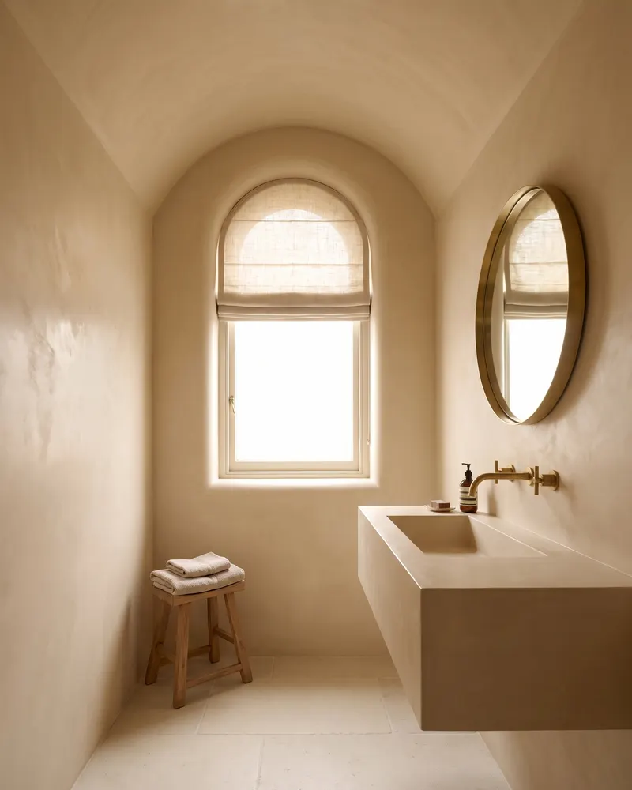

The quick answer
Tadelakt vs microcement comes down to three things: the look you want, where the surface goes and how much hand work you are paying for. Choose tadelakt if you want a warm, hand-made, organic finish with soft movement and natural, earthy tones, mostly on walls, showers, niches and tubs. Choose microcement if you want a precise, uniform, contemporary surface in almost any color, including floors, vanities and areas that take daily foot traffic. Both are seamless, both have no grout lines and both can be made water resistant for a shower when they are installed correctly.
| Question | Tadelakt | Microcement |
|---|---|---|
| What it is | Moroccan lime plaster, burnished by hand and sealed with olive oil soap | Cement base with polymers and fine aggregates, applied in thin coats and sealed |
| Look | Soft, slightly undulating, depth like polished stone | Flatter, even, architectural, close to fine concrete |
| Best places | Shower walls, niches, tubs, wet rooms, sinks, accent walls | Walls and floors, vanities, countertops, stairs, shower floors and walls |
| Floors | Not our recommendation for floors with daily traffic | Yes, with a floor system and the right sealer |
| Over existing tile | Usually no, it wants a sound mineral base | Often yes, after the tile is checked, cleaned and primed |
| Water protection | Burnishing plus soap creates a water repellent surface | Sealer system on top of the coats |
| Upkeep | Gentle cleaners, re-soap from time to time | Gentle cleaners, reseal when the surface starts to dull |
| Repairs | Can be patched with lime and burnished again | Possible, but blending a patch is harder |
| Cost | Usually higher, slower and fully hand-burnished | Usually lower per square foot on larger areas |
What each one is made of
Tadelakt is a lime plaster from Morocco, traditionally made with lime from the Marrakech region. The installer applies it in layers, compacts it and then polishes it with a smooth stone while it is still setting. At the end, the surface is rubbed with black olive oil soap. The soap reacts with the lime and leaves a water repellent layer inside the surface, not just on top of it. It is a centuries-old craft and it looks it, in the best way: slightly undulating, soft and alive.
Microcement is a modern coating. It is a cement base mixed with polymers (resins) and very fine aggregates, colored with pigments and applied in thin coats, usually a few millimeters in total. Each coat is troweled and sanded, and the system is finished with sealers that protect it from water and stains. The result is flatter and more consistent than tadelakt, which is why it works so well in modern spaces. If you want the full picture of the material, read our guide what is microcement.
Look and feel
Tadelakt has depth and gentle variation, a bit like polished stone or old plaster. Light moves across it, and every corner shows that a hand made it. Edges are soft and rounded, which is part of the charm. Microcement is more even and architectural. It can be smooth or slightly textured, matte or with a soft sheen, and the edges can be crisp. In a warm, natural bathroom tadelakt feels right; in a sharp, modern one microcement often does.
Touch is different too. Tadelakt feels cool and silky, close to a river stone. Microcement feels like a fine, dense concrete. If you can, put your hand on both before you decide. We bring samples of both to the estimate for exactly that reason.

Where tadelakt works best
Tadelakt is at its best on walls and curved shapes that get wet but do not get walked on. Showers, shower niches, built-in tubs, wet rooms, vessel sinks and accent walls are where it shines. Because it is applied by hand, it can wrap around arches, benches and rounded corners with no seams at all.
It is less suited to floors with daily traffic, kitchen countertops that see knives and hot pans, and any surface that takes hard knocks. Lime is softer than a sealed cement system, so on those surfaces it shows wear faster. When a client wants the tadelakt look on a floor, we usually suggest tadelakt on the walls and a matching microcement on the floor.
Where microcement works best
Microcement is the more flexible of the two. It goes on walls and floors, vanities, countertops, stairs, fireplaces and shower floors and walls. Because it is so thin, it can often go over an existing surface such as sound tile, concrete or plaster after the right preparation, which can save demolition. It is also the better choice when you want one continuous finish from the floor up the wall and into the shower.
It does need a stable, well prepared base. Cracks in the substrate, loose tile or moisture coming up through a slab will show through a thin coating, so the preparation matters as much as the finish itself.

Tadelakt vs microcement in a shower
Both can be used in a shower, but they protect against water in different ways. Tadelakt gets its water resistance from the way it is compacted, burnished and soaped. Microcement gets it from the sealer system. In both cases, the finish is not the waterproofing of the shower on its own: a proper waterproof membrane behind it, the right slope to the drain and correct detailing around valves, niches and the drain are what keep water out of the wall.
In daily use, tadelakt likes a shower that can dry out between uses, a good exhaust fan and gentle, soap-based cleaners. Microcement likes the same fan and gentle cleaners, and it tolerates heavier daily use on the floor. For a steam shower, talk with us before choosing, because steam puts more stress on any finish.
Floors, countertops and high-traffic areas
This is where the two materials split. For a bathroom floor, a kitchen counter or a hallway, microcement with a floor-rated system is our recommendation. It is harder wearing, and the sealer can be renewed when it starts to look tired. Tadelakt on a floor will patina quickly and needs more care, which some people love in a guest bath but most families do not want in a main bathroom.
Installation and curing time
Tadelakt is slow by nature. The lime needs to be applied, compacted and burnished at the right moment of the set, and that window depends on temperature and humidity. After the soap, it needs time to cure before it takes regular water, often a few weeks, so the shower is not used right away.
Microcement is applied in several thin coats with sanding between them, then sealed. Each coat and each sealer layer needs its own drying time. A typical bathroom takes several working days, and the sealer needs a few more days before heavy use. On every job we give you the real schedule in the written estimate, based on the size of the space and the base we are working on.
Maintenance and repairs
Both finishes are grout-free, so both are easy to keep clean. Neither is truly maintenance-free. Use pH-neutral or soap-based cleaners and avoid bleach, acids and abrasive pads on both.
Tadelakt is maintained by re-soaping the surface from time to time, more often in a shower that is used every day. Small chips or scratches can be repaired with fresh lime and burnished again, and a good repair blends in over time. Microcement is maintained by resealing when the surface starts to lose its protection. Repairs are possible, but matching the color and texture of a patch is harder than with tadelakt, so we prefer to prevent damage with the right sealer from the start.
Cost: what makes each one more or less expensive
Tadelakt is usually the more expensive of the two per square foot, because it is slower and entirely hand-burnished by a skilled installer, and it takes a specialist installer. Microcement can be more efficient to install over larger areas, and it can save demolition when it goes over existing tile. What moves the price most on both:
- The size and shape of the area (curves, niches and benches take more time).
- The condition of the base and how much preparation it needs.
- Whether a new waterproof membrane is needed behind the finish.
- Color, texture and the sealer system chosen.
- Access, protection of the rest of the home and the schedule.
We do not price by guesswork. After a visit, you get a detailed written estimate with the scope, the materials and the value, so you can compare both options for the same space side by side.
Which one fits an older Greater Boston home
Many homes around Boston, Newton, Brookline and Chestnut Hill have old plaster walls, uneven floors and framing that moves with the seasons. Tadelakt, being a lime plaster, is breathable and a little more forgiving of an old house, and its soft, hand-made look suits period homes. Microcement suits renovations where the room has been opened, leveled and rebuilt, or modern condos and new additions where crisp lines are the goal. In both cases, the base is checked before anything goes on the wall, and we tell you honestly when a room needs work first.
How to choose: five questions to ask yourself
- Is it a floor? If yes, microcement.
- Do you want a hand-made, organic look or a clean, modern one? Organic points to tadelakt, modern points to microcement.
- Can the room be demolished to the studs? If not, microcement over existing tile may be the easier path.
- Are you happy to re-soap a shower from time to time? If not, microcement with a good sealer is easier to live with.
- Do you want the same finish on the walls and floor? Microcement does both; or combine tadelakt walls with a matching microcement floor.
Why we install both
Most contractors around Boston offer one of these finishes, if any. We install tadelakt and microcement, along with Venetian plaster, so we have no reason to push you toward one. The owner, Esdras Ribeiro, is on site, and the recommendation is based on your room, your base and how you use the space. Every project starts with a visit, samples of both finishes and a written estimate before any work starts.